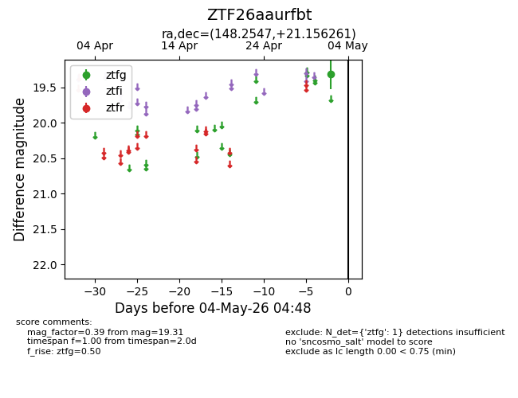
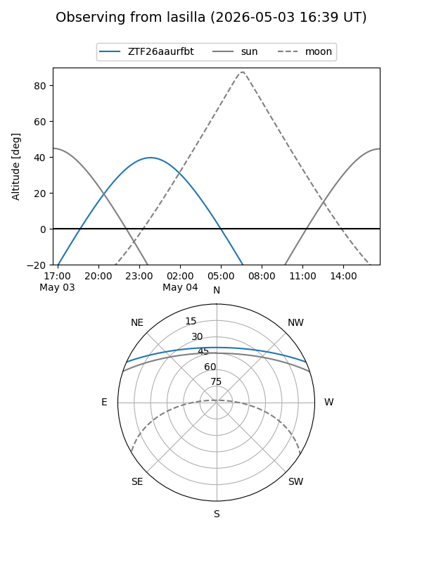
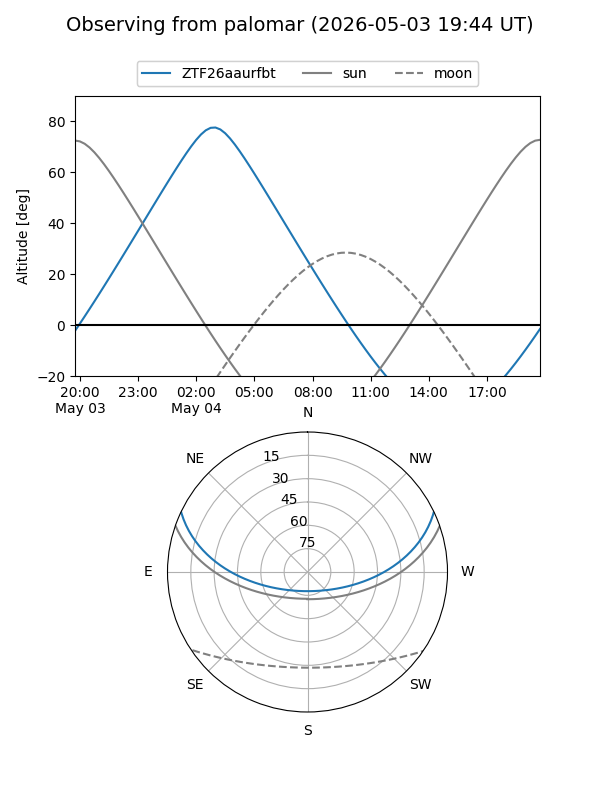

ZTF26aaurfbt
Target ZTF26aaurfbt at 2026-05-04 05:04
Aliases and brokers:
FINK: link
Lasair: link
ALeRCE: link
alt names
ZTF26aaurfbt (ztf,fink_ztf)
Coordinates:
equatorial (ra, dec) = 148.2547,+21.15626
equatorial (HMS+DMS) = 09:53:01.13,+21:09:22.54
galactic (l, b) = (211.3187,+49.06954)
Flags:
Photometry:
last ztfg=19.31
1 ztfg detections
Lightcurve

Visibility


Additional plots